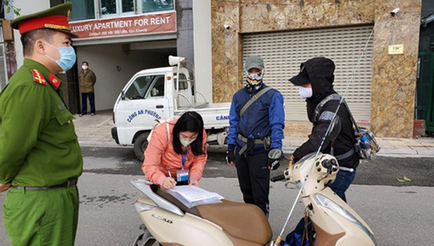
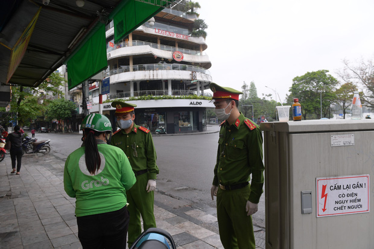

Liên quan đến dịch Covid -19, ngày 5/4 lãnh đạo UBND phường Trúc Bạch cho biết, đã tổ chức kiểm tra xử lý các trường hợp người dân ra đường không thuộc diện được phép.
Qua đó đã ban hành quyết định xử phạt 3 trường hợp, mỗi trường hợp 200.000 đồng. Việc xử phạt được căn cứ theo điểm a, khoản 1, điều 11 của Nghị định 176 quy định xử phạt vi phạm hành chính trong lĩnh vực y tế.

Cụ thể: Cảnh cáo hoặc phạt tiền từ 100.000 đồng đến 300.000 đồng đối với một trong các hành vi: Không thực hiện biện pháp bảo vệ cá nhân đối với người tham gia chống dịch và người có nguy cơ mắc bệnh dịch theo hướng dẫn của cơ quan y tế.
Sau khi lực lượng chức năng tuyên truyền, hướng dẫn người dân các quy định của Chính phủ và UBND thành phố Hà Nội về công tác phòng chống dịch Covid-19, các trường hợp vi phạm đã chấp hành nộp phạt và cam kết thực hiện nghiêm túc các giải pháp phòng chống dịch.
Cũng trong sáng nay lực lượng của UBND phường Vĩnh Phúc (quận Ba Đình) lập chốt tuyên truyền, kiểm tra, nhắc nhở và xử lý nghiêm các trường hợp cố tình vi phạm tại khu vực chợ tạm đầu ngõ 465 Đội Cấn. Tổ công tác đã xử phạt 15 trường hợp không đeo khẩu trang với tổng số tiền 3.000.000.

Được biết chiều qua ngày 4/4, Công an quận Hoàn Kiếm cùng công an các phường Lý Thái Tổ, Tràng Tiền, Hàng Bạc… đã tổ chức 6 chốt xung quanh hồ Hoàn Kiếm nhắc nhở người dân đi bộ tập thể dục và đạp xe quanh hồ về nhà cách ly theo quy định phòng, chống dịch Covid-19.
Theo ghi nhận đã có hàng trăm trường hợp được nhắc nhở và đã chấp hành nghiêm yêu cầu của lực lượng chức năng.
Trước đó, tại cuộc họp Ban chỉ đạo phòng chống dịch Covid-19 TP Hà Nội chiều 3/4, Chủ tịch UBND TP Nguyễn Đức Chung tiếp tục khuyến cáo người già và những người không có việc cần thiết cố gắng không đi ra ngoài đường trong 2 tuần tới.